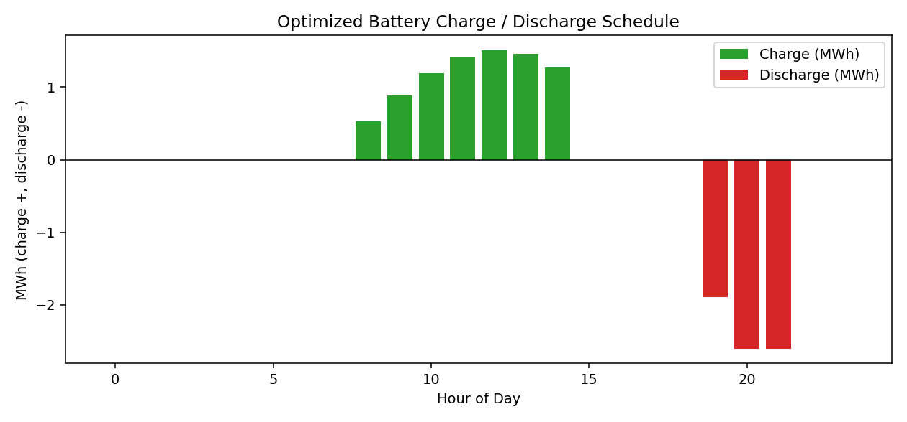

Internship · INDE 500 · Mindsets, Beirut · June to August 2026, return offer September to December 2026
Business Analyst Intern at Mindsets
Mindsets is a Beirut-based consulting firm. During my summer internship (June to August 2026), I worked first with its Strategy and Decision Advisors team on market research and client proposals, then rotated to another business unit, Mindsets Deventures, where I worked on renewable-energy investment screening. At the end of the summer, Mindsets offered me a return position, and I have continued as a part-time intern from September to December 2026.
What I worked on
Market-entry assessments: Georgia and South Africa
I researched each country's government institutions, public-sector demand, procurement systems and consulting opportunities. I then structured the findings on market size, industry trends and the competitive landscape into material the team used in its analysis. I also supported two proposals: a higher-education demand study for an institution in Qatar and a project in South Africa.
Solar Lead Vetting Tool: Italy and Cyprus
I built an Excel tool to screen solar and battery-storage acquisition leads. It models hourly generation, project and fund cash flows, and a weighted technical scoring matrix, so the team can compare leads on the same basis before spending time on due diligence.
Going further: optimizing the battery schedule
The tool's first version charged the battery in a fixed 8am-to-3pm window and discharged it from 5pm to 9pm. I asked whether a fixed window was leaving revenue on the table, so I wrote a Python model that chooses the hourly charge, discharge and direct-sale schedule by linear optimization. It runs against twelve monthly representative price days, with the battery's state of charge carried consistently through each day. I also ran sensitivity analyses on round-trip efficiency and on how much solar output may be routed to the battery. Built-in validation checks confirm that the optimized schedule respects every physical limit.

Reflection
What I learned
Consulting taught me to start from the client's question rather than from the method. Most of my time on the market-entry work went into finding, checking and structuring information from many sources, then presenting it so a busy reader could act on it. I learned that a clear slide is often worth more than a complex model.
Applying my coursework to a new situation
The battery schedule is where my Operations Research courses (INDE 302 and 303) moved from homework to real work. I recognized a fixed rule of thumb as a decision that could be optimized: decision variables for each hour, capacity and state-of-charge constraints, and revenue as the objective. INDE 301 (Financial Engineering) helped me read the project and fund cash flows in the vetting tool. In my internship report I listed INDE 535, INDE 302/303 and INDE 301 as the three courses that helped me most, and these projects are the reason.
Other perspectives
I also noticed a problem in how the team itself works. Several proposals compete for the same analysts and deadlines, and staffing is decided informally. I proposed it as a resource-allocation problem, where a model assigns people to proposals based on deadlines, expertise and workload. Looking at my own workplace through an engineering lens is a habit I want to keep.
Challenges
Moving from one business unit to another mid-internship meant learning a new domain, electricity markets and storage, very quickly. I handled it by building small models first and checking every assumption against the existing workbook before changing anything.
Earlier internships
-
Rotational Intern, pharmaceutical operations
Rotated across more than five departments and worked with team members across manufacturing, supply chain and quality. Analyzed workflows and KPIs for two to three core processes, supporting recommendations to improve coordination between teams.
-
Operations Intern
Analyzed production workflows, inventory levels and supplier coordination across two production lines. Tracked material availability for 5 to 7 core SKUs to help reduce minor line stoppages and keep line uptime at about 90 to 95%.